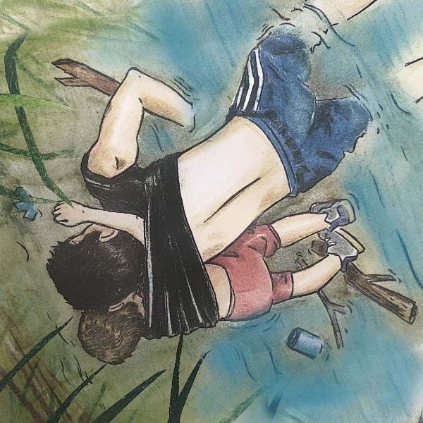

El camino hacia una vida ¨digna¨ echada a las manos de la suerte
Ilustración por: Periodista Colombiano Jhon Lindarte de (Noticias RCN)
"Hay quienes migran porque en Centroamérica la mitad de la población vive bajo la línea de la pobreza. Hay quienes migran para reencontrarse con sus familiares en el Norte. Pero hay también quienes, (...) más que migrar, huyen". Menciona el autor Óscar Martínez en su libro: Los Migrantes Que No Importan en el que relata la travesía a la que muchos Salvadoreños y Centroamericanos se exponen al cruzar las fronteras de manera ilegal para llegar a Estados Unidos.
¿Qué está provocando esta situación? Pareciera que esta pregunta tiene muchas respuestas interminables tales como el diario vivir contra la violencia colectiva, los robos, la falta de empleo, las extorsiones y el miedo a ser parte de las estadísticas mortales es el gran precio y debido a esto, muchos de nuestros salvadoreños optan por buscar asilo en otros países como Estados Unidos, asilo al que no todos se les es concedido y se les obliga a poner en riesgo su vida a pasar de manera ilegal a otro país.
Una de las principales causas de la migración en nuestro país El Salvador son los actos delictivos que se cometen a diario en cada departamento, siendo principalmente San Salvador afectado con un porcentaje de del 16.5% según los datos del estudio de la Universidad Tecnológica: Migración forzada y Violencia Criminal. La inmigración en sí es una característica del humano, y actualmente un fenómeno que se da por justa razón, si se toma en cuenta que existen muchos motivos, como por ejemplo si las personas migrantes sufren en su país de origen diversos problemas, llámese falta de empleo, violencia colectiva social u otros. El inmigrante por tanto en muchos casos si tiene una necesidad de buscar asilo en otros países para lograr salir adelante y tener una estabilidad económica con la cual pueda sostener a sus familiares, es deber del país buscado brindar ayuda a los afectados y aún más si entre los países en cuestión existen relaciones diplomáticas estrechas, como por ejemplo el de El Salvador y los Estados Unidos de América. En definitiva una posible solución a esta problemática está en que el gobierno formara un plan estratégico para mejorar la seguridad de nuestro país y así contrarrestar la violencia que a diario la población se enfrenta, logrando que otros países sientan la confianza de hacer inversiones en El salvador ofreciendo así mismo a las personas oportunidades de empleo, y a raíz de esto reducir en un porcentaje drástico que la población salvadoreña no tenga la presión ni la necesidad de emigrar y probar ¨suerte¨ en otros países arriesgando su vida y de sus familiares.